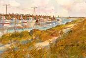
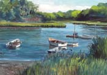

Anne's Cape Cod Favorites
| |
Orleans
|


|
 Rock
Harbor
Rock
Harbor
Rock Harbor fishing port on Cape Cod Bay seems oblivious to the tourists (although it may be a special place for the sports fishing tourist). That fresh seafood coming in on the boats hurries right into Capt'n Cass's kitchen in Rock Harbor. It's the freshest and most tasty, and the best value for seafood lunches and dinners. I saw a reference to a beach at the harbor -- if you can find it, you would probably have it to yourself. The harbor is located at the end of Rock Harbor Road.
 Skaket
Beach Sunsets
Skaket
Beach Sunsets
Skaket Beach on Cape Cod Bay is east ofRock Harbor, but you get there by following Skaket Beach Road. This is my favorite place to watch a sunset. Check the tide chart and plan for an evening when the tide will be at its lowest at sunset. The long flat beach gets a pattern of tidal pools that reflect the colors from the sky. Get a few walkers in the picture, and it calls out for your camera. There's even a tower to climb to improve your view. It's hard to choose whether to walk way way out in bare feet toward the setting sun, or stay on the tower and take pictures.
 Rail
Trail Gap
Rail
Trail Gap
The rail trail has a gap in Orleans. Coming from Brewster, the trail ends at Main St and Old Colony Way. The recommended bicycle route takes you down Rock Harbor Rd to the harbor and then continues on Rock Harbor Rd to rejoin the trail.
|
Kent's
Point on Pleasant Bay
Kent's Point is at the upper reaches of Little Pleasant Bay where it narrows and they call it "The River". The town of Orleans recently acquired it as conservation land. Trails take you around the edges of the point for wonderful views of the bay's natural beauty. In at least one place you could take a swim in the warm salt water if you can brave a little salt grass muck. The National Seashore conducts a tour of Kent's Point. From Monument Road, follow signs to Kent's Point starting at Frost Fish Lane.
 Sailing
Lessons at Arey's Pond
Sailing
Lessons at Arey's Pond
In the same neighborhood, down Arey's Lane from Rte 28, Arey's Pond shelters many boats in salt water. This too is part of Little Pleasant Bay, up "The River" to "Namequoit River" which leads to the pond. Arey's Pond Boatyard builds sailboats and can answer just about any boating questions. I took a week of sailing lessons at Arey's, which was fun and taught me a lot about sailing and Pleasant Bay.
Pah
Wah Point on Pleasant Bay
I seldom see another person in these twelve acres of town conservation land in South Orleans. There's a trail with markers and a brochure expaining the natural history points. The trail leads to a picnic table in a lovely setting looking onto Pleasant Bay and a marshy beach that you can have to yourself. The water is warm and sheltered. At the end of Namequoit Road, off Rte 28.
Bicycling
Monument St and South Orleans
The area along Little Pleasant Bay from Monument Street to South Orleans is challenging, but takes you to idyllic points along the water. The game is to find backroads that avoid Rte 28, a horrible place for bicycles. This requires a street map. Starting from Main St, follow Monument Rd. Ride out to see Kent's Point and back, then follow Kescayoganset Rd to Arey's Lane. A dirt road takes you around Pilgrim Lake to Arey's Pond. Then, the only way to get to Namequoit is very carefully for a quarter mile on Rte 28. Namequoit goes to Paw Wah Point, and Heritage Drive takes you to Portanimicut, which connects to Quanset. The town landing at the end of Portanimicut looks out onto Little Pleasant Bay, while the scene at the end of Quanset looks south toward Chatham across big Pleasant Bay. All the return trips strengthen your legs with big climbs.
Intro | Tours | Maps | Restaurants
Walking | Bicycling | Boating | Sightseeing | Beaches
Brewster | Chatham | Orleans | Eastham | Wellfleet | Truro | Provincetown
[ Anne's Home Page ]